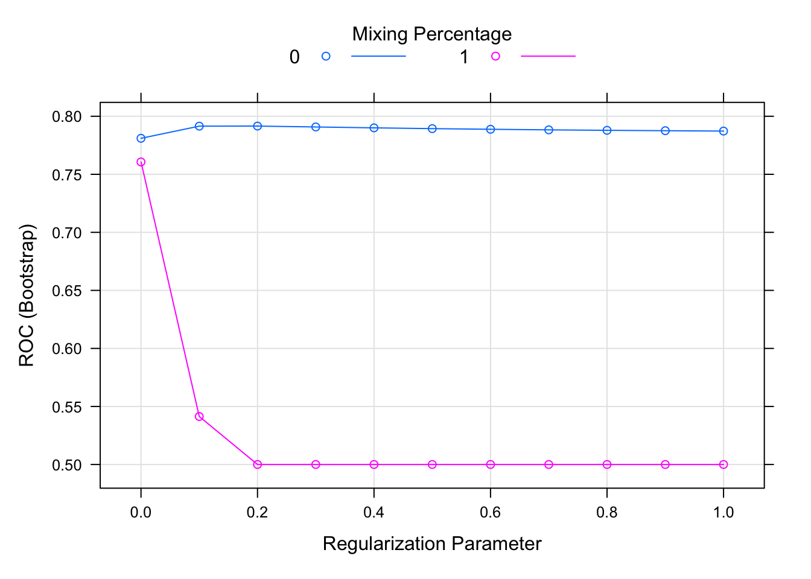

Chapter 6 Model selection
Ref: here
In this section, we demonstrate how to compare the performance between different models. So the first step is to create a training and testing dataset.
library(C50)
data("mlc_churn")
table(mlc_churn$churn)/nrow(mlc_churn)##
## yes no
## 0.1414 0.8586We see that about 15% of the customers churn. It is important to maintain this proportion in all of the folds.
myFolds <- createFolds(mlc_churn$churn, k=5)
str(myFolds)## List of 5
## $ Fold1: int [1:1000] 4 9 18 25 30 33 42 47 67 73 ...
## $ Fold2: int [1:1000] 1 3 5 11 14 23 36 44 55 61 ...
## $ Fold3: int [1:999] 8 12 15 22 24 27 28 29 31 32 ...
## $ Fold4: int [1:1000] 6 13 16 19 26 38 39 46 48 50 ...
## $ Fold5: int [1:1001] 2 7 10 17 20 21 34 35 37 41 ...# verify
sapply(myFolds, function(i){
table(mlc_churn$churn[i])/length(i)
})## Fold1 Fold2 Fold3 Fold4 Fold5
## yes 0.142 0.141 0.1411411 0.141 0.1418581
## no 0.858 0.859 0.8588589 0.859 0.8581419myControl <- trainControl(
summaryFunction = twoClassSummary,
classProb = TRUE,
verboseIter = FALSE,
savePredictions = TRUE,
index = myFolds
)6.1 Linear model
glm_model <- train(
churn ~.,
mlc_churn,
metric = "ROC",
method = "glmnet",
tuneGrid = expand.grid(
alpha = 0:1,
lambda = 0:10/10
),
trControl = myControl
)
print(glm_model)## glmnet
##
## 5000 samples
## 19 predictor
## 2 classes: 'yes', 'no'
##
## No pre-processing
## Resampling: Bootstrapped (5 reps)
## Summary of sample sizes: 1000, 1000, 999, 1000, 1001
## Resampling results across tuning parameters:
##
## alpha lambda ROC Sens
## 0 0.0 0.7810206 0.2301791801
## 0 0.1 0.7914828 0.0654123018
## 0 0.2 0.7915574 0.0180324588
## 0 0.3 0.7907987 0.0067194096
## 0 0.4 0.7900281 0.0003533569
## 0 0.5 0.7893529 0.0000000000
## 0 0.6 0.7887966 0.0000000000
## 0 0.7 0.7883022 0.0000000000
## 0 0.8 0.7878990 0.0000000000
## 0 0.9 0.7875657 0.0000000000
## 0 1.0 0.7872430 0.0000000000
## 1 0.0 0.7606466 0.2673122987
## 1 0.1 0.5413578 0.0000000000
## 1 0.2 0.5000000 0.0000000000
## 1 0.3 0.5000000 0.0000000000
## 1 0.4 0.5000000 0.0000000000
## 1 0.5 0.5000000 0.0000000000
## 1 0.6 0.5000000 0.0000000000
## 1 0.7 0.5000000 0.0000000000
## 1 0.8 0.5000000 0.0000000000
## 1 0.9 0.5000000 0.0000000000
## 1 1.0 0.5000000 0.0000000000
## Spec
## 0.9685529
## 0.9957487
## 0.9996506
## 1.0000000
## 1.0000000
## 1.0000000
## 1.0000000
## 1.0000000
## 1.0000000
## 1.0000000
## 1.0000000
## 0.9584782
## 1.0000000
## 1.0000000
## 1.0000000
## 1.0000000
## 1.0000000
## 1.0000000
## 1.0000000
## 1.0000000
## 1.0000000
## 1.0000000
##
## ROC was used to select the optimal
## model using the largest value.
## The final values used for the model
## were alpha = 0 and lambda = 0.2.plot(glm_model)